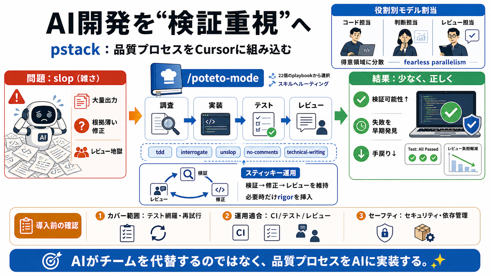

Cursor 2.0: Agent-First Architecture Complete Guide
The agent-first architecture enables Cursor to handle tasks that previously required significant manual coordination: mu…

pstackは、AIがコードを書いたり直したりするときに「質（rigor）」を優先するためのワークフローを、Cursor上のモード／スキルとして組み込むプラグインです。
AIは大量に出力しやすい一方で、根拠の薄い修正や手戻りにつながる“slop（雑さ）”を生みやすい、という問題意識があります。
タスク開始時に /poteto-mode を使うと、要請を読み取り、playbookから適切な手順を選び、必要な工程（調査・実装・テスト・レビュー等）を自動で組み立てます。
pstackの発想は、AIに作らせっぱなしではなく、playbookという“レシピ”に従って検証とレビューを工程として強制することです。
「丁寧に書く」ではなく「検証・TDD・レビューを手順化して通す」ことで、再現性を高めます。
pstackはスループット（出力量）を目的にせず、unslopped（高品質・少ないが良い）へ寄せることで、後工程の手戻りを減らす狙いです。
/setup-pstackで、文章・判断・コード・レビューなど役割ごとにモデル割当を作り、得意領域に処理を分散させます。
/poteto-modeはスティッキーで、タスクをまたいでも維持されつつ、必要なときだけ rigor 系の工程を差し込みます。
/poteto-modeは、状況に応じて tdd、interrogate、unslop、no-comments、technical-writing などのスキルへルーティングします。
Comment Sickoは「読み取り専用のコメントレビュー」の位置づけで、通常は /no-comments 経由で呼び出す運用が推奨されています。
提示文面だけでは各playbookの評価基準が読み切れないため、rigorがどこまで担保されるかは不明です。
pstackは「AIが開発チームを代替する」よりも、「開発チームの品質プロセス（検証・レビュー・TDD）をAIに実装する」取り組みとして位置づけられます。
まずはplaybookの検証範囲と、あなたのプロジェクト運用（CI/テスト/レビュー）に合うかを確認してから導入するのが安全です。
本スライドは、ユーザー提供の素材（Cursorプラグイン「pstack」および /poteto-mode /setup-pstack 等の説明文、要点、FAQ、意見）に基づき圧縮・再構成したものです。
The agent-first architecture enables Cursor to handle tasks that previously required significant manual coordination: mu…
The agent-first architecture enables Cursor to handle tasks that previously required significant manual coordination: mu…
| `pstack` | pstack | Lauren Tan | Developer Tools | if you want to go fast, go deep first. pstack helps you write less,…
| `pstack` | pstack | Lauren Tan | Developer Tools | if you want to go fast, go deep first. pstack helps you write less,…
| Topic | | Replies | Views | Activity | --- --- | Cursor Continues Learning plugins is not working Bug Reports ski…